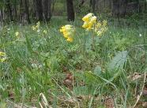
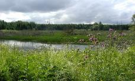
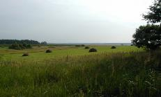
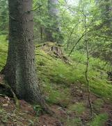

Государственный
природный заказник
“Виштынецкий”
природный заказник
“Виштынецкий”

С 1994 года на территории Красного леса организован комплексный государственный природный заказник “Виштынецкий” регионального значения. (Распоряжение администрации Калининградской области № 281-р от 5 мая 1994 года). С 1998 года он функционирует как Зоологический государственный природный заказник регионального значения (Постановление Главы администрации области от 18 мая 1998г. №351 “Об утверждении Положения о государственных природных заказниках”).
Заказник образован целью сохранения популяции благородного оленя и предусматривает особый режим охраны, обеспечивающий использование природных ресурсов без нанесения ущерба охраняемому виду животного.
Заказник образован целью сохранения популяции благородного оленя и предусматривает особый режим охраны, обеспечивающий использование природных ресурсов без нанесения ущерба охраняемому виду животного.



На территории заказника обитает около сотни редких и охраняемых растений Калининградской области, среди которых такие виды как лилия саранка Lilium martagon, аконит пёстрый Aconitum variegatum, гроздовник полулунный Botrychium lunaria, синюха голубая Polemonium caeruleum, пальчатокоренник Фукса Dactylorhiza fuchsii, наперстянка крупноцветковая Digitalis grandiflora и другие. Леса Виштынецкой возвышенности до сих пор остаются единственным местом обитания рыси в Калининградской области.
.